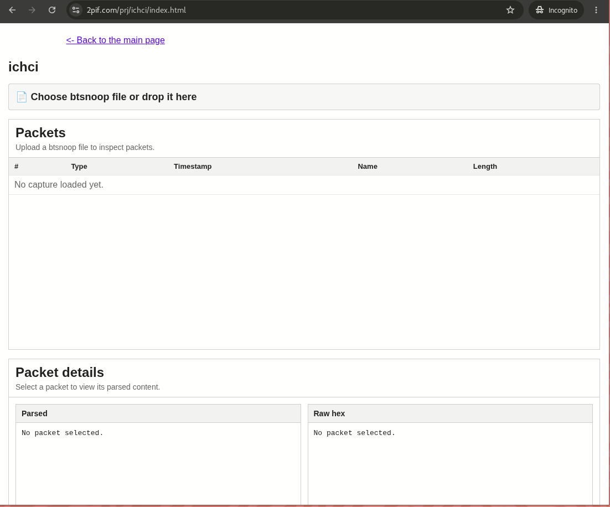

Online BTSnoop Viewer
BTSnoop files are used to store Host Controller Interface (HCI) logs.
How to capture BTSnoop files
-
Linux with BlueZ:
Run
sudo btmon -w btsnoop.log. -
Android:
Enable
Enable Bluetooth HCI snoop loginDeveloper options. Then save the logs locally, for example by runningadb pull /data/misc/bluetooth/logs/btsnoop_hci.log. -
Zephyr RTOS:
Enable BT Monitor, for example with
CONFIG_BT_DEBUG_MONITOR_UART=y, then capture the logs withbtmon.
The generated files can later be opened in the ICHCI tool.
